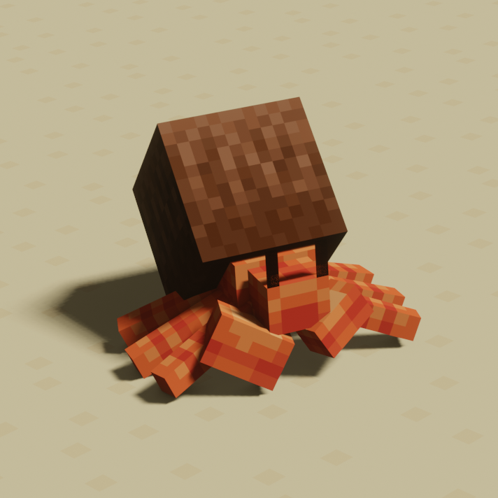
生态 Ecologics
共 115 个条目 · ecologics
版本: 2.3.7 · 来源: ecologics-1.21.1-2.3.7.jar
Simple vanilla biome updates, with fun mobs, blocks, and more!
MC百科中文名: 生态
MC百科页面: https://www.mcmod.cn/class/935.html（生态 (Ecology Mod)）
官方介绍 （Modrinth · 联网获取）
Ever thought the bland Vanilla biomes could use an update? Ecologics aims to improve various Vanilla biomes by adding fun new mobs, blocks, and more, all while staying completely true to the Vanilla style.
🏝 The Coastal Update
- The beach biome now contains lush Coconut Trees! Watch your head because fully grown coconuts may fall down on you!
- While some coconuts fall and break into food, sometimes a Coconut Crab will pop out from inside! Don't let their size fool you, as the coconut shell on these crustaceans can withstand multiple strong hits. These creatures will fight back if you try to attack them, but if you break their shell, they will scurry away in fear! They can drop crab claws, which can be cooked into food or used as shears.
- Fully grown coconuts drop 2 coconut slices, which can be eaten to remove all effects from the player like milk. After eating a coconut slice, you are left with the coconut husk, which can be used as a bowl in recipes or composted.
- You will now find Seashells scattered along the shore. These shells can be used to craft the small (yet mighty) Sandcastle!
- Sandcastles can be placed on top of turtle eggs to hide them from zombies and other mobs! And yes, the eggs will still continue to hatch when inside the sandcastle.
- A new tropical-themed music disc can be found in buried treasure!
🌵 The Desert Update
- Deserts now have Camels! They can be tamed and ridden by up to 2 players at once, and they can be right clicked with a chest for some extra storage. They can be fed dead bushes and cacti, and they are bred using Prickly Pears.
- Prickly Pear plants now sprout on top of fully-grown cacti! Eating this fruit raw will slightly damage you, but you can avoid this by cooking them.
- Pots spawn inside of new desert ruins with loot inside! Pots can hold up to 9 individual items, but the only way to see or obtain them is to break the pot. Pots can be chiseled by shift + right-clicking them with a pickaxe, cycling through various designs. Attaching a comparator to a pot will emit a redstone signal equal to the amount of items inside, and pots also emit a 1-tick signal each time you put an item inside.
- New Desert Ruins structures will now spawn around the desert!
❄️ The Snowy Update
- Snowy and icy biomes now contain Penguins! Penguins spawn in huddles, and being near a huddle of at least 4 penguins grants you a regeneration effect. Penguins will hunt fish and pick up the item, which they will eat. You can breed them with fish and the penguin will keep the egg by its feet, which will eventually hatch.
- When baby penguins grow into an adult, they will shed their feathers as an item, which can be used to brew a Potion of Sliding! This effect will make you slide on all blocks as if they were ice.
- Watch your step in icy biomes because patches of Thin Ice are now scattered around! Jumping on thin ice will cause it to crack, and standing on cracked thin ice will break it and drop you into the water below.
- Build chilly creations with new Snow Bricks and Ice Bricks!
🌳 The Plains Update
- The Plains biome now has its own unique tree - Walnut Trees! Walnut leaves drop walnuts, which can be eaten.
- Squirrels will now spawn in the Plains biome! Squirrels can be fed walnuts to make them trust the player. If a Squirrel is trusting, they will pick up sapling items and plant them nearby. Squirrels can be bred with honeycomb if they are trusting.
- The plains biome is still the empty field you know and love, just with a few minor additions to enliven the area.
🌸 The Lush Caves Update
- New Azalea logs and Flowering Azalea logs, which replace the oak wood on the vanilla azalea tree. They can be crafted into planks, which are used to craft the other wood decoration blocks. It matches perfectly with the moss and lush cave biome.
- A beautiful Azalea flower, which can be obtained by using shears on flowering azalea leaves, bushes, or logs.
- Moss Carpet is now stackable like snow layers
- The surfaces of lush caves are now decorated with Surface Moss, a new item that can be placed on the sides of blocks up to 3 times, increasing the amount of moss on that surface with each layer.
- All of this content has been moved here from my other mod Better Azalea, as it fits the theme of Ecologics and will be easier to update.
🍁 Maple & Syrup Update
- Available on 1.21.11 and newer.
- New Maple Trees which can generate in Forest, Windswept Forest, and Dappled Forest as uncommon tree. You can tap the tree of sap or cut the trees for a beautiful, grounded Maple wood set.
- New Sappy Maple Logs which can be tapped using Spiles. When you put a Bucket on a Spile, it will gradually fill up with maple sap. It takes a while for the bucket to fill up so be patient. The log may exhaust on completely filling a bucket.
- Use Cauldrons over hot blocks (example: Campfire) to boil Maple Sap into Maple Syrup which is a sweet treat. You can bottle it using Glass Bottle and from there, it can be crafted into sugar or used to make some sweet foods!
✅ Mod Compatibility? Config?
- We are partnered with the mod Every Compat, which automatically adds compatibility for the wood types in Ecologics! It lets you craft the blocks from Quark, Decorative Blocks, Architects Palette, Macaw's Mods, Another Furniture, and many more popular mods!
- On Fabric, we have integration with Mod Menu for the config file. On Forge 1.18, we use a standard config file for everything. However, on Forge 1.19, you need to use datapacks to configure most things because Forge changed their biome modification system. If you are unfamiliar with configuring datapacks, here is a simple wiki article explaining how: https://github.com/samedifferent/Ecologics/wiki/Ecologics-Configuration-(Forge)
🔄 1.16.5 Backport?:
Forge recently announced that they will no longer support 1.16.5 and the oldest version that they will support is 1.18.2. Therefore, I will not be supporting an outdated version. If someone would like to volunteer to complete and maintain a backport, they can message me privately for permission. You may not backport this mod without my explicit permission, per the mod's licenses.
资料来源：Ecologics（自动匹配，仅供参考）
物品与方块
ecologics:azalea_boat · 物品
 杜鹃木按钮
杜鹃木按钮ecologics:azalea_button · 方块
 杜鹃木运输船
杜鹃木运输船ecologics:azalea_chest_boat · 物品
 杜鹃木门
杜鹃木门ecologics:azalea_door · 方块
 杜鹃木栅栏
杜鹃木栅栏ecologics:azalea_fence · 方块
 杜鹃木栅栏门
杜鹃木栅栏门ecologics:azalea_fence_gate · 方块
 杜鹃花
杜鹃花ecologics:azalea_flower · 方块
 悬挂式杜鹃木告示牌
悬挂式杜鹃木告示牌ecologics:azalea_hanging_sign · 方块
 杜鹃原木
杜鹃原木ecologics:azalea_log · 方块
 杜鹃木板
杜鹃木板ecologics:azalea_planks · 方块
 杜鹃木压力板
杜鹃木压力板ecologics:azalea_pressure_plate · 方块
 杜鹃木告示牌
杜鹃木告示牌ecologics:azalea_sign · 方块
 杜鹃木台阶
杜鹃木台阶ecologics:azalea_slab · 方块
 杜鹃木楼梯
杜鹃木楼梯ecologics:azalea_stairs · 方块
 杜鹃木活板门
杜鹃木活板门ecologics:azalea_trapdoor · 方块
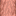
墙上的悬挂式杜鹃木告示牌ecologics:azalea_wall_hanging_sign · 方块墙上的杜鹃木告示牌
ecologics:azalea_wall_sign · 方块
杜鹃木ecologics:azalea_wood · 方块
 骆驼刷怪蛋
骆驼刷怪蛋ecologics:camel_spawn_egg · 物品
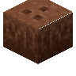
椰子ecologics:coconut · 方块椰木船
ecologics:coconut_boat · 物品
 椰木按钮
椰木按钮ecologics:coconut_button · 方块
 椰木运输船
椰木运输船ecologics:coconut_chest_boat · 物品
椰子蟹刷怪蛋ecologics:coconut_crab_spawn_egg · 物品
 椰木门
椰木门ecologics:coconut_door · 方块
 椰木栅栏
椰木栅栏ecologics:coconut_fence · 方块
 椰木栅栏门
椰木栅栏门ecologics:coconut_fence_gate · 方块
 悬挂式椰木告示牌
悬挂式椰木告示牌ecologics:coconut_hanging_sign · 方块椰子壳
ecologics:coconut_husk · 物品
 椰树树叶
椰树树叶ecologics:coconut_leaves · 方块
 椰木原木
椰木原木ecologics:coconut_log · 方块
 椰木木板
椰木木板ecologics:coconut_planks · 方块
 椰木压力板
椰木压力板ecologics:coconut_pressure_plate · 方块
 椰树幼苗
椰树幼苗ecologics:coconut_seedling · 方块
 椰木告示牌
椰木告示牌ecologics:coconut_sign · 方块
 椰木台阶
椰木台阶ecologics:coconut_slab · 方块
 椰子片
椰子片ecologics:coconut_slice · 物品
 椰木楼梯
椰木楼梯ecologics:coconut_stairs · 方块
 椰木活板门
椰木活板门ecologics:coconut_trapdoor · 方块墙上的悬挂式椰木告示牌
ecologics:coconut_wall_hanging_sign · 方块墙上的椰木告示牌
ecologics:coconut_wall_sign · 方块
椰木ecologics:coconut_wood · 方块
 熟仙人掌果
熟仙人掌果ecologics:cooked_prickly_pear · 物品
 蟹钳
蟹钳ecologics:crab_claw · 物品
 蟹肉
蟹肉ecologics:crab_meat · 物品盛开的杜鹃木船
ecologics:flowering_azalea_boat · 物品
 盛开的杜鹃木运输船
盛开的杜鹃木运输船ecologics:flowering_azalea_chest_boat · 物品
 盛开的杜鹃木门
盛开的杜鹃木门ecologics:flowering_azalea_door · 方块
 盛开的杜鹃木栅栏
盛开的杜鹃木栅栏ecologics:flowering_azalea_fence · 方块
 盛开的杜鹃木栅栏门
盛开的杜鹃木栅栏门ecologics:flowering_azalea_fence_gate · 方块
 悬挂式盛开的杜鹃木告示牌
悬挂式盛开的杜鹃木告示牌ecologics:flowering_azalea_hanging_sign · 方块
 盛开的杜鹃原木
盛开的杜鹃原木ecologics:flowering_azalea_log · 方块
 盛开的杜鹃木板
盛开的杜鹃木板ecologics:flowering_azalea_planks · 方块
 盛开的杜鹃木告示牌
盛开的杜鹃木告示牌ecologics:flowering_azalea_sign · 方块
 盛开的杜鹃木台阶
盛开的杜鹃木台阶ecologics:flowering_azalea_slab · 方块
 盛开的杜鹃木楼梯
盛开的杜鹃木楼梯ecologics:flowering_azalea_stairs · 方块
 盛开的杜鹃木活板门
盛开的杜鹃木活板门ecologics:flowering_azalea_trapdoor · 方块墙上的悬挂式盛开的杜鹃木告示牌
ecologics:flowering_azalea_wall_hanging_sign · 方块
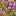
墙上的盛开的杜鹃木告示牌ecologics:flowering_azalea_wall_sign · 方块
盛开的杜鹃木ecologics:flowering_azalea_wood · 方块
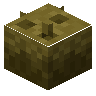
悬挂的椰子ecologics:hanging_coconut · 方块
 冰砖台阶
冰砖台阶ecologics:ice_brick_slab · 方块冰砖楼梯
ecologics:ice_brick_stairs · 方块冰砖墙
ecologics:ice_brick_wall · 方块冰砖
ecologics:ice_bricks · 方块
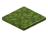
苔藓层ecologics:moss_layer · 方块
 音乐唱片
音乐唱片ecologics:music_disc_coconut · 物品
 企鹅羽毛
企鹅羽毛ecologics:penguin_feather · 物品
企鹅刷怪蛋ecologics:penguin_spawn_egg · 物品
 雕刻陶罐
雕刻陶罐ecologics:pot · 方块
 杜鹃花盆栽
杜鹃花盆栽ecologics:potted_azalea_flower · 方块
椰树幼苗盆栽ecologics:potted_coconut_seedling · 方块
核桃树苗盆栽ecologics:potted_walnut_sapling · 方块
 仙人掌果
仙人掌果ecologics:prickly_pear · 方块
 沙堡
沙堡ecologics:sandcastle · 方块
 贝壳
贝壳ecologics:seashell · 方块
 贝壳块
贝壳块ecologics:seashell_block · 方块
 贝壳砖台阶
贝壳砖台阶ecologics:seashell_tile_slab · 方块
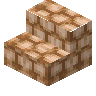
贝壳砖楼梯ecologics:seashell_tile_stairs · 方块
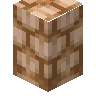
贝壳砖墙ecologics:seashell_tile_wall · 方块
 贝壳砖
贝壳砖ecologics:seashell_tiles · 方块
 雪砖台阶
雪砖台阶ecologics:snow_brick_slab · 方块
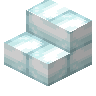
雪砖楼梯ecologics:snow_brick_stairs · 方块
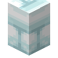
雪砖墙ecologics:snow_brick_wall · 方块
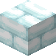
雪砖ecologics:snow_bricks · 方块
松鼠刷怪蛋ecologics:squirrel_spawn_egg · 物品
 去皮杜鹃原木
去皮杜鹃原木ecologics:stripped_azalea_log · 方块
去皮杜鹃木ecologics:stripped_azalea_wood · 方块
 去皮椰木原木
去皮椰木原木ecologics:stripped_coconut_log · 方块
去皮椰木ecologics:stripped_coconut_wood · 方块
 去皮核桃原木
去皮核桃原木ecologics:stripped_walnut_log · 方块
去皮核桃木ecologics:stripped_walnut_wood · 方块表层苔藓
ecologics:surface_moss · 方块
 薄冰
薄冰ecologics:thin_ice · 方块
 热带炖菜
热带炖菜ecologics:tropical_stew · 物品
 核桃
核桃ecologics:walnut · 物品
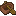
核桃木船ecologics:walnut_boat · 物品
 核桃木按钮
核桃木按钮ecologics:walnut_button · 方块
 核桃木运输船
核桃木运输船ecologics:walnut_chest_boat · 物品
 核桃木门
核桃木门ecologics:walnut_door · 方块
 核桃木栅栏
核桃木栅栏ecologics:walnut_fence · 方块
 核桃木栅栏门
核桃木栅栏门ecologics:walnut_fence_gate · 方块
 悬挂式核桃木告示牌
悬挂式核桃木告示牌ecologics:walnut_hanging_sign · 方块
 核桃树叶
核桃树叶ecologics:walnut_leaves · 方块
 核桃原木
核桃原木ecologics:walnut_log · 方块
 核桃木板
核桃木板ecologics:walnut_planks · 方块
 核桃木压力板
核桃木压力板ecologics:walnut_pressure_plate · 方块
 核桃树苗
核桃树苗ecologics:walnut_sapling · 方块
 核桃木告示牌
核桃木告示牌ecologics:walnut_sign · 方块
 核桃木台阶
核桃木台阶ecologics:walnut_slab · 方块
 核桃木楼梯
核桃木楼梯ecologics:walnut_stairs · 方块
 核桃木活板门
核桃木活板门ecologics:walnut_trapdoor · 方块墙上的悬挂式核桃木告示牌
ecologics:walnut_wall_hanging_sign · 方块墙上的核桃木告示牌
ecologics:walnut_wall_sign · 方块
核桃木ecologics:walnut_wood · 方块